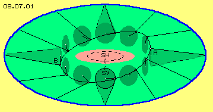
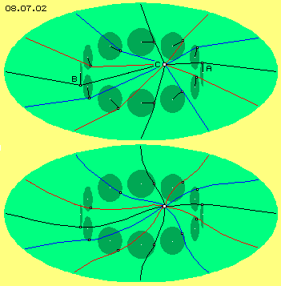
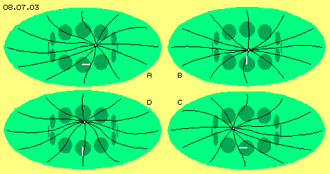
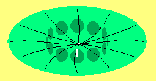
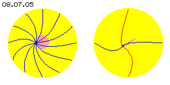

Cone-shaped Transition

Analogue to reduction of horizontal swinging towards poles, now here this vertical swinging towards outside is reduced to smaller radius, all around at this equatorial level. Starting from each clock-hand twelve connecting-lines are drawn, each showing radial outward to resting aether (here represented by blue ring). Connecting lines here simply are drawn straight, however in reality are curved lines.
Within that environment of Free Aether (blue) all aether (light green) is swinging, near centre at relative long radius, towards outside at each smaller radius. Connecting lines at this equatorial level move cone-shaped, like here marked by dotted lines or some dark green (only left and right, upside and at bottom). This picture thus shows isolated this vertical swinging component, so one can see how motions become reduced towards Free Aether aside. Movement pattern of seeming wave running all around, in principle is likely at outward areas, only amplitudes are fading. In reality, swinging movement all times is combination of horizontal and vertical movement. So realiter that diagonal swinging as a whole is reduced towards outward at gradually smaller radius.
Spider-Web 
A connecting line (black) is marked from resting aether right side, via A, C and B to resting aether left side, an other line (also black) connects aether-neighbours from top to bottom. Like spider threads other connecting lines are positioned between, showing radial outward (here marked blue and red). All aetherpoints of a connecting line are swinging in- and outward respective at diagonal circles, so connecting lines at areas of clocks move corresponding to their hands.
Below at picture 08.07.02 likely situation is drawn once more, only straight lines are replaced by curved connecting lines. As mentioned at previous chapters, distances to resting aether vary and these differences are only balanced by different curvature of connecting lines. However also here must be remembered, relation of central swinging and radius of total vortex-system is extremely overdrawn at these pictures.
Central Whip
At frontside clock the hand is marked white. Analogue to its left-turning all other clocks are turning, each some ´time-shifted´. These four (plus further eight) pictures are shown at animation (see below) and visualize that movement process.

Already previous sea-waves are not harmonious in total, because clocks can not turn totally synchronous. Distances between hands of two clocks e.g. between 12 and 11 hour are longer than between 9 and 8 hour. These differences again must be compensated by overlays, e.g. like already mentioned at chapter 03.05. ´Circulating Waves´ by picture 03.05.06. That´s e.g. why central swinging can not occur at total plane level but tracks are somehow like ´roller coaster´.
Aether won´t behave like mechanic gearing machinery, its movements are better compared with fluids. Previous ´clocks´ e.g. were arranged at exact circle and it´s generally impossible, any exact geometric circle could exist within aether. In principle, a potentialvortexcloud is a local motion-unit embedded within sphere of resting aether. Thus far, such vortex-systems are autonomous. However that shell does not protect from external influences. So realiter, within any real potentialvortexcloud can never exist total ´harmony´ - and all discrepancies cumulate at centre.
Spiral-Galaxies 
These galaxies often do not show real even plane but borders mostly are tilt upward at one side and tilt down at the other side - like ´brim of a slouch hat´ respective like previous mentioned ´roller coaster track´. However just these galaxies show, ideal shape of movement pattern obviously can not exists all times, but is disturbed by many external influences.
At centre of galaxy not at all gigantic ´black hole´ exists, pulling and sucking in all ambient materia. At centre is no huge accumulation of mass - anywhere at universe exists only likely aether (neither of different ´density´ nor ´weight´). Many suns are gathered at centre of galaxies, because these coarse aether-vortices of celestial bodies are pushed from outside towards centre, by external disturbances (as mentioned upside) and by general ´whip´ of overlaying circle motions (like shown in details by next chapter). All influences cumulate at centre, aether there is under a lot of ´stress´ - visible by light and other radiations.
Sun-Systems

Sun-vortex-system reaches far beyond outmost planets into space. Planets by themselves are whirling aether, which are drifting within sun-vortex and causing ´disturbances´ depending on constellations. These interferences like external influences from all sides cumulate at centre, resulting aether-stress. Abruptly and inevitably comes up necessity for balancing motions, resulting radiation of diverse kind. Aether becomes ´cooking´ - even aether by itself shows no temperature. Aether movements however become so intensive, vortex-complexes of material particles are accelerated extremely and are colliding so hard, for example ´photons are born´ (see following chapters of appearances of light).
Sun shows different revolution-speeds, at equator about 24 days while near poles one revolution takes about 30 days. Also that´s typical characteristic of potentialvortexclouds resp. is only to explain by necessities of aether-movements within such vortices:
Detailed description of astronomic potentialvortexclouds will take many new chapters. Before this however, some other subjects must be discussed.
Electron
No wonder, elementary particles are so hard to grasp, so one even is talking about ´electron-clouds´. Visible or measurable at these appearances however concerns only its centre with its most intensive motions or even only that central ´aether-stress´. Whole potentialvortexcloud of electron is much wider. It´s also hard to seize as movements within that ´cloud´ inevitably are not symmetric but all movements occur at ´track-with-stroke´ - like discussed at following chapter.
Chapter 08.05. ´Movement-Necessities´ did show, swinging at most long radius occurs at centre of potentialvortexclouds, which gradually becomes reduced towards poles to shorter radius, finally to ´resting´ Free Aether with its swinging at minimum short radius. Connecting lines between poles and centre move at tracks like surface of cones.
At picture 08.07.03 this spider-web is drawn once more, by some smaller scale. At A, this observed aetherpoint is positioned right side of system axis. At B that point did wander to middle and to frontside, at C it is positioned left-outside and at D it did move upside-back.
Ring of previous clocks must not be positioned exactly at equatorial level, but could be arranged some diagonal. At previous chapter 08.05 ´Motion-Necessities´ already was mentioned, movements within fluids practically never are symmetric - and analogue ´natural´ aether-movements will be asymmetric. Like horizontal connecting lines do not show straight radial outward but are showing spiral towards centre, analogue will run vertical connecting lines from pole to pole via spiral curves. Typical potentialvortexcloud thus will correspond to motion pattern drawn at earlier chapters respective shown at this picture 08.07.05, left side by cross-sectional and right side by longitudinal cross-sectional view. Further down, corresponding animation demonstrated its movement process. Common understanding is, sun is a ´fix star´ and planets are turning around. Realiter, centre of sun will be swinging around ´system axis´ and sun-surface is ´pulsating´. Sun is no well-shaped sphere at all. Surface shows ´honeycombs and scars´. From all sides previous discrepancies along connecting lines are running towards centre. If disharmony at an area becomes too great, huge motion-shreds fly far off - however finally are pressed down again into sun-surface - just by that ´whiplash´ of connecting lines resp. realiter by not totally harmonic swinging of ambient aether.
Common understanding is, sun is a ´fix star´ and planets are turning around. Realiter, centre of sun will be swinging around ´system axis´ and sun-surface is ´pulsating´. Sun is no well-shaped sphere at all. Surface shows ´honeycombs and scars´. From all sides previous discrepancies along connecting lines are running towards centre. If disharmony at an area becomes too great, huge motion-shreds fly far off - however finally are pressed down again into sun-surface - just by that ´whiplash´ of connecting lines resp. realiter by not totally harmonic swinging of ambient aether.
Swinging within a potentialvortexcloud occurs at most wide radius at its centre.
Further outward towards resting aether, balancing movements are necessary
where radius of swinging is smooth reduced.
Connecting lines into vertical like horizontal directions (and between)
are spiral lines with changing curvature.
At centre all discrepancies and disturbances meet,
so most violent aether-movements exist there.
Potentialvortexclouds of much smaller scale e.g. are electrons. At least as momentary ´free electrons´ they will show ideal shape of movement pattern. Within electric conductor are Free Electrons, however also these are pushed around between vortex-systems of material particles. Even electrons momentary flying free within space, they are continuously bothered by any radiations. So also at micro-scale one might not assume, aether is working like gearing wheels and ´mechanical precision´. It probably might be, each vortex-system is absolutely individual - and it might be astonishing, processes are running with these relative steady results.
08.08. Track with Stroke
08. Something Moving